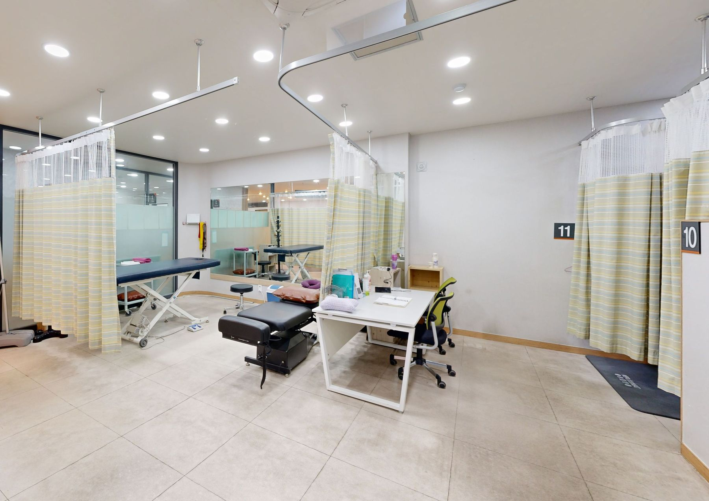
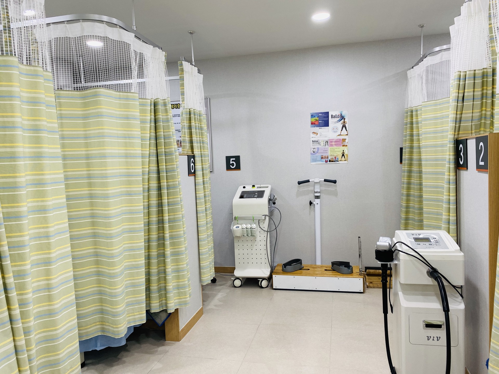

01
일자목
목의 C자 곡선이 줄어든 상태입니다. 목 통증이 함께 오기도 합니다.
Treatment Room

Posture
01
목의 C자 곡선이 줄어든 상태입니다. 목 통증이 함께 오기도 합니다.
02
머리가 어깨보다 앞으로 나온 상태입니다. 일자목, 굽은 어깨와 함께 오기도 합니다.
03
어깨가 앞으로 말린 상태입니다.
04
무릎과 발목이 이루는 선을 확인합니다.
05
척추가 옆으로 휜 상태입니다.
06
골반의 기울기와 발바닥 아치를 확인합니다.
Clinic


